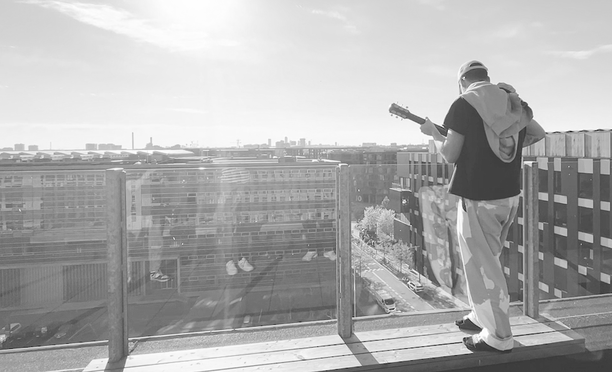

Kom med bagom en guitarist
Lidt om Bardur Petersen
Bardur har dedikeret sit liv til guitaren. Inspireret af punkens energi og rockens attitude begyndte han sin musikalske rejse. Men med tiden fandt han også glæde ved popmusikkens melodier. Bardur har altid drømt om at leve af musikken og selvom vejen er udfordrende, fortsætter han med at øve, skrive og optræde. Opdag hans historie i videoen nederst på siden.
